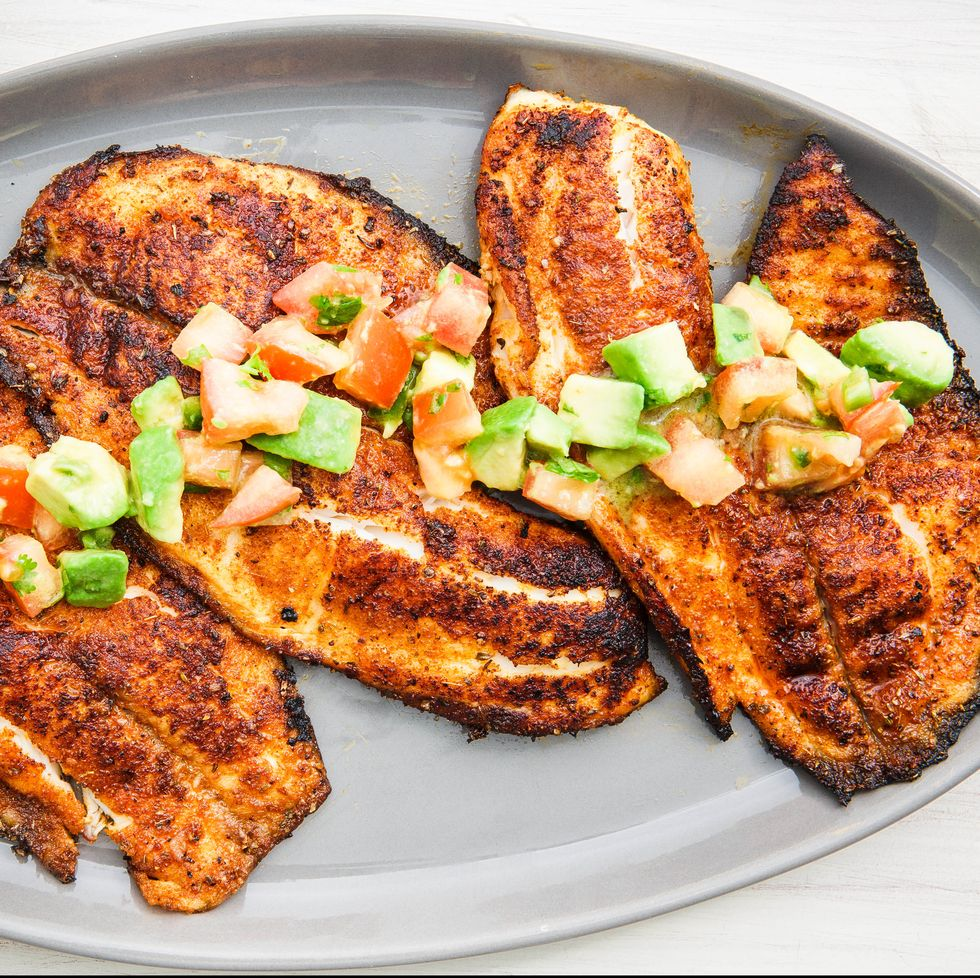

Blackened Tilapia

The mild-tasting fish gets a delicious flavor-packed spice rub from brown sugar, cumin, paprika, and oregano. Serve the fish topped with a super-easy avocado salsa—or don't. It's delicious enough on its own.
Ingredients for Tilapia:
- 2 tbsp. packed brown sugar
-
4 tsp. ground cumin
-
2 tsp. kosher salt
-
2 tsp. paprika
- 2 tsp. dried oregano
- 1 tsp. freshly ground black pepper
- 1 tsp. garlic powder
- 4 (6-oz.) tilapia filets
- 2 tbsp. extra-virgin olive oil
Directions:
-
In a small bowl, combine brown sugar and spices. Rub spice mix all over tilapia.
-
In a large cast-iron skillet over medium heat, heat oil. Add tilapia and cook until crust is deeply golden and fish flakes easily with a fork, 2 to 3 minutes per side.
- In a medium bowl, toss avocado, tomato, jalapeño, and cilantro. Add oil and lime juice and season with salt and pepper.
- Serve tilapia topped with avocado salsa.
Recipe from the internet